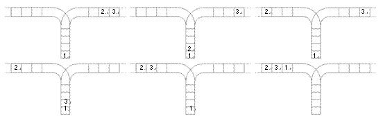

栈是计算机中经典的数据结构，简单的说，栈就是限制在一端进行插入删除操作的线性表。
栈有两种最重要的操作，即 pop（从栈顶弹出一个元素）和 push（将一个元素进栈）。
栈的重要性不言自明，任何一门数据结构的课程都会介绍栈。宁宁同学在复习栈的基本概念时，想到了一个书上没有讲过的问题，而他自己无法给出答案，所以需要你的帮忙。
宁宁考虑的是这样一个问题：一个操作数序列，1,2,…,n（图示为 1 到 3 的情况），栈 A 的深度大于 n。
现在可以进行两种操作，
1.将一个数，从操作数序列的头端移到栈的头端（对应数据结构栈的 push 操作） 2.将一个数，从栈的头端移到输出序列的尾端（对应数据结构栈的 pop 操作）
使用这两种操作，由一个操作数序列就可以得到一系列的输出序列，下图所示为由 1 2 3 生成序列 2 3 1 的过程。
（原始状态如上图所示）
你的程序将对给定的 n，计算并输出由操作数序列 1,2,…,n 经过操作可能得到的输出序列的总数。
输入文件只含一个整数 n。
输出文件只有一行，即可能输出序列的总数目。
[题目来源：NOIP 2003 普及组第三题]
首先题目的要求是输出可能产生的数字排序的总类数，然而，只要其中有一位不一样，那么它的总类不一样，所以我们可以将题目要求转为每输出一个属计一次操作，这样，只要统计每一种情况下它的下一步的可能输出种类，一直持续到最后只有唯一一种情况，最后将输出种类统计即可。（也就是递归函数的应用）
首先题目有三个数据存放点，所有的情况都可以用这三个数据来表示，类似于三个数确定一个三维坐标点。在这里，我将这三个数据点分别计为S（C语言中的scanf，表示输入端，即最开始数字存放的地方），Z（栈的首字母，即临时存放数字的地方），P（C语言中的printf，表示输出端）。
于是，只要有S，Z，P的值，我们就可以知道一个唯一的情况，并且通过一定的算法便可以求得这种情况下的种类数。例如上面题目举例的那种情况的初始值，用S，Z，P表示便是S：1 2 3，Z：无，P：无。
但是，真的需要把每个数都存起来吗，通过题目可知，最开始的S区的数字为1-n，即n个互不重复的数字，并且题目所要求的结果也是总类数，只要数字排列顺序不一样便是一类，而不用去关心每个数字它具体的值，只需要记住数字都是不一样的即可，例如最开始的数组是1 2 3还是3 2 1又或者是11 4 514，只要是三个数据，那么它们所能产生的排列组合的种类数也都是确定的，这也是题目为什么输入只是一个数n来表示它的数据中数值的个数，种类数只与每个区数据的个数有关，而与数值无关。
所以可以用唯一的三个数值（即每个区它自己所拥有的数值个数）来表示唯一的SZP值，并且由于唯一的SZP值对于这一种唯一的情况，并且唯一的情况对应唯一的种类数，并且种类数是可以通过某种算法计算出来（就是题目描述的操作方法）。然后也很容易可以知道，无论P的值为多少，只要S和Z的值是相同的，那么接下来能出现的种类数也一定是固定的。
所以，我们可以假设有这么一个函数，它需要输入S和Z的值，就能经过一定的算法输出一个值，即种类数。现在我们的目标就是要写出这个函数，在写函数的期间，一定要记住，这个函数的作用就是，输入S和Z，输出这种情况下的种类数。
我们假设这个函数叫做fun()，所以可以这样编写。（以下均省略常用头文件或模块）
C语言：
int fun(int s,int z)
{
}
Python：
def fun(s,z):
pass
然后S和Z的值是如何改变呢，通过题目分析，我们每次的可以选择以下两个操作中的其中一个操作：
1.从S区取第一个数进入Z区，即S区少一个数值，Z区增加一个数值，不过在S区没有数时，就不能选择这个操作。
2.从Z区取第一个数进入P区，即Z区少一个数值，P区增加一个数值，不过在Z区没有数时，就不能选择这个操作。
那么当S区和Z区都没有数时应该怎么做呢，简单分析就可以知道，当S和Z区都没有数时，便完成了一次实验，这时候便可以统计类型数了。将分析转化为代码便是这样的
C语言：
int fun(int s,int z)
{
if (s!=0)
fun(s-1,z+1);
if (z!=0)
fun(s,n-1);
else if(s==0)
return 1;
}
Python：
def fun(s,z):
if s!=0:
fun(s-1,z+1)
if z!=0:
fun(s,z-1)
elif z==0:
return 1
为什么是return 1;呢，因为当输入完成时，我们的结果已经确定，形成了一个唯一的输出值，还记得我们定义这个函数的返回值是什么吗，它的返回值便是在s和n的情况下所可能的输出的总类数，那么当输出完成时，能输出的总类数肯定已经固定，有且只有一个输出的类型，所以这时候的函数返回值就是1，因此需要编写return 1;。
不过现在很显然，只有当s和z都为0时输出一个1，而其他的值没有输出，当s和z不都为0时，实验还没有结束，而且我们定义的函数，无论s和n是多少（在题目要求以内的值），我们都可以输出一个唯一的数值来表示可能输出的总类数。而这个函数的编写过程中，我们是模拟了操作，两个不同的操作执行了两次函数，而函数的返回值便是其种类数，那么，在这个s和z的值的情况下，它所能产生的种类数便是这两个函数的返回值相加。所以代码可以这样编写：
C语言：
int fun(int s,int z)
{
int a=0;
if (s!=0)
a+=fun(s-1,z+1);
if (z!=0)
a+=fun(s,n-1);
else if(s==0)
return 1;
return a;
}
Python：
def fun(s,z):
a=0
if s!=0:
a=a+fun(s-1,z+1)
if z!=0:
a=a+fun(s,z-1)
elif z==0:
return 1
return a
至此，你只要输入s和z的值，这个函数就会返回在这个s和z值下情况的所能产生的种类数。可能你已经发现，题目的输入其实等同于s=n，z=0的情况。所以题目的答案其实就是fun(n,0);的值。所以完善代码如下：
C语言：
int fun(int s,int z)
{
int a=0;
if (s!=0)
a+=fun(s-1,z+1);
if (z!=0)
a+=fun(s,n-1);
else if(s==0)
return 1;
return a;
}
void main()
{
int n,k;
scanf("%d",&n);
k=fun(n,0);
printf("%d",k)
}
Python：
def fun(s,z):
a=0
if s!=0:
a=a+fun(s-1,z+1)
if z!=0:
a=a+fun(s,z-1)
elif z==0:
return 1
return a
n=int(input())
print(fun(n,0))
至此，题目解决完毕。
对于这种题目，要求求出结果可能产生的种类数，而过程中具有一些规则操作的题目，很有可能可以使用递归函数进行解决。
而编写递归函数中最重要的思想就是，在编写过程中，要把这个函数当作已经编译好并且符合要求的函数，这样你才能专心去编写当前的函数。因为只要你把函数正确的编写好以后，那么之前你编写过程中的假设，也就成为了事实。
还有比较重要的几点就是：
递归函数是去模拟操作，并且是把每一个可以执行的操作全部执行一遍，并不是选择一个进行执行，所以需要定义一个初始变量去把所有操作所产生的可能性进行汇总并输出。
当递归函数进入了最后没有操作的时候，需要让它输出一个固定值以表示某一组操作结果所能带来的结果可能数，虽然说这个数在绝大部分情况下都是1。
注意有一些操作是有条件的，就例如本题中是需要本体区域中有数值才能对其操作。
End
QQ：2750368249
WX：ba379298